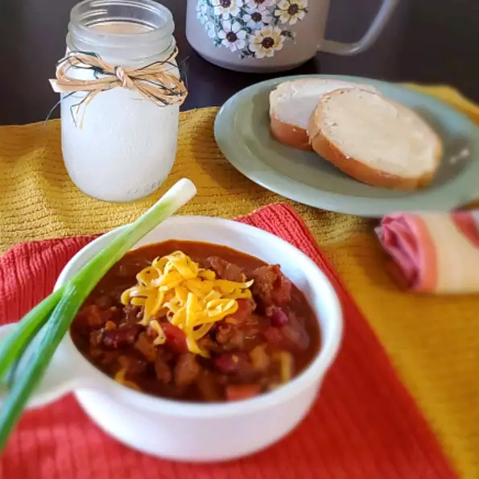

Chili

Description
Can be made on the stove or in the slow cooker. It's quick, easy and so good.
Using canned goods from the pantry make this recipe quick and easy!
Ingredients
- 2 pounds lean ground beef
- 1 (46 fluid ounce) can tomato juice
- 1 (29 ounce) can tomato sauce
- 1 (15 ounce) can kidney beans, drained and rinsed
- 1 (15 ounce) can pinto beans, drained and rinsed
- 1 1/2 cups chopped onion
- 1/4 cup chopped green bell pepper
- 1/8 teaspoon ground cayenne pepper
- 1/2 teaspoon white sugar
- 1/2 teaspoon dried oregano
- 1/2 teaspoon ground black pepper
- 1 teaspoon salt
- 1 1/2 teaspoons ground cumin
- 1/4 cup chili powder